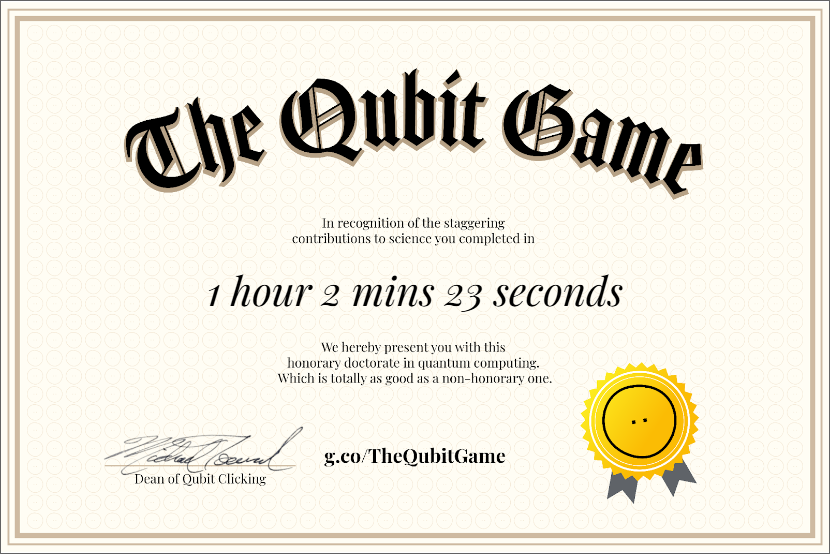

My quantum degree
Quantum degree
I got my first quantum degree and I'm really proud of it, absolutely, thanks to google.
I was working in google's qubit web and I really liked what I was doing , the more I learn, the more I was thinking how it could be used in modern workspace. I'm still think about it. Now I'm here to discuss the keytakeaways, Quantum computing is complex, and heat alone could destroy hours/days/years of work. where the qubits have to start from first.
I was afraid the whole time when i was playing the game, that my qubits were gonna be destroyed. The cache is still keeping my game running.


what is qubit?
Qubit is a bit but different from classical computer's definition, the qubits does give you 0s and 1s but it's based on probability distribution, where the highest probability is calculated and will give you some answers.
why the hype around it?
If qubits could somehow be used to convert quantum space algorithms to traditional algorithms, then it would genuinely help a lot of people like instead of GPU , we can just have a quantum processor that does the same thing with fewer quantities and resource power? but i doubt it anyway reduces resource power. The point is quantum computers generates a probability distribtuion of all possible values, that is for every bit, it has 2 values, so eg: there are 4 bits, then there are 2^4 possibilities , the value will be selected through a quantum algorithm, that manipulates it such a way the final result will be in either 0 or 1 according to question, it will distribute the value, rather than multiplexing in GPU or CPU, the quantum realm just needs distribution of bits possible value and sends it. I know it's confusing .. the more you get into it, it unleashes a whole beast and is contradictory to your common sense. that i can gurantee.
Quantum Algorithms
These algorithms are complex, and its hard for me to understand but if you guys had any idea, then let me know about it, but what i have understood till now, is that, algorithms are designed based on qubits direction that is alpha and other what not mathematical symbols represented to produce a answer, that is we have to know when to cohere, measure, boost, entangle these combination what gives the qubit direction and value.
Quantum entanglement
If i joined with you , is all because you and I are same, that's what basically quantum entanglement means. but there is a niche property that we could exploit here, is that we could get values of 2 or more qubits in a single iteration, instead of multiplexing.
Apologies
I apologize if my quantum computing interpretion is wrong, if you feel that i made something wrong here, please don't hesitate to message me via email.